, ca. 1905
, ca. 19051 His parents, Pauline and Hermann Einstein
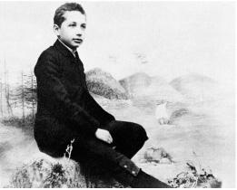
2 In a Munich photo studio at age 14
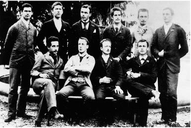
3 Bottom left at the Aarau school, 1896
4 With Mileva Mari, ca. 1905
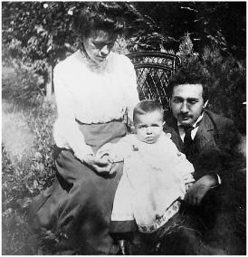
5 With Mileva and Hans Albert, 1905
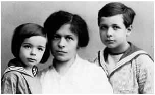
6 Eduard, Mileva, and Hans Albert, 1914
7 With Conrad Habicht, left, and Maurice Solovine of the “Olympia Academy,” ca. 1902
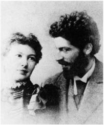
8 Anna Winteler Besso and Michele Besso
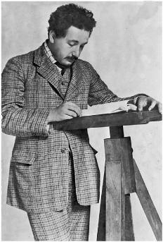
9 At the patent office in Bern during the miracle year, 1905
10 In Prague, 1912
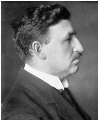
11 Marcel Grossmann, who helped with math at college and for general relativity
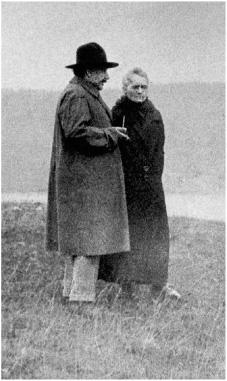
12 Hiking in Switzerland with Madame Curie, 1913
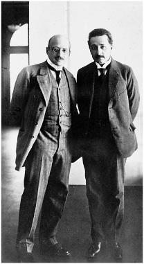
13 With the chemist Fritz Haber, assimilationist and marriage mediator, July 1914
14 Watched over by Zionist leader Chaim Weizmann in New York, April 1921
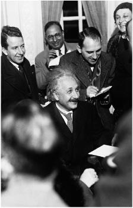
15 Meeting the press in New York, 1930
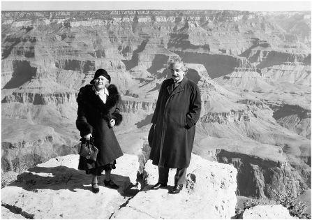
16 With Elsa at the Grand Canyon, February 1931
17 The 1911 Solvay Conference
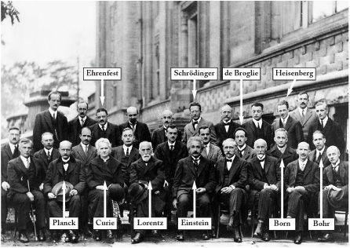
18 The 1927 Solvay Conference
19 Receiving the Max Planck medal from its namesake, 1929
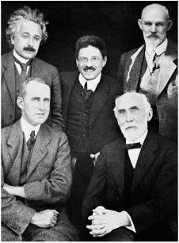
20 In Leiden: Einstein, Ehrenfest, de Sitter in back; Eddington and Lorentz in front; September 1923
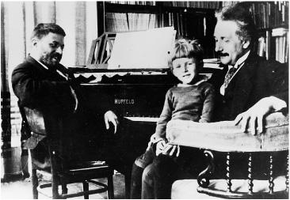
21 With Paul Ehrenfest and Ehrenfest’s son in Leiden
22 Niels Bohr and Einstein discussing quantum mechanics at Ehrenfest’s home in Leiden, 1925, in a photo taken by Ehrenfest
23 Werner Heisenberg
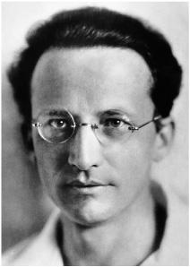
24 Erwin Schrödinger
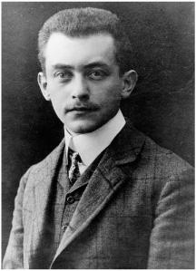
25 Max Born
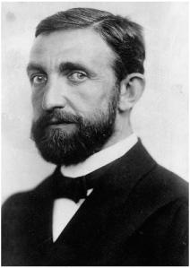
26 Philipp Lenard
27 Vacationing on the Baltic Sea, 1928
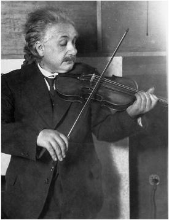
28 Connecting to the cosmos
29 With Elsa and her daughter Margot, Berlin 1929
30 Margot and Ilse Einstein at the house in Caputh, 1929

31 In Caputh with his son Hans Albert and grandson Bernhard, 1932
32 At the Mt. Wilson Observatory near Caltech, discovering that the universe is expanding, January 1931
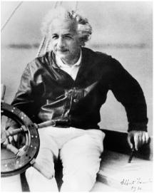
33 Sailing against the prevailing currents, Long Island Sound, 1936
34 Welcoming Hans Albert to America, 1937
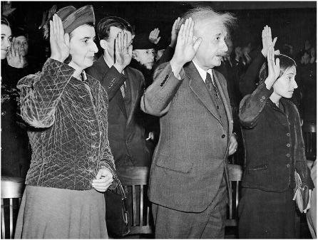
35 Margot, Einstein, and Helen Dukas being sworn in as U.S. citizens, October 1940
36 Receiving a telescope in the backyard of 112 Mercer Street, underneath the picture window built for his study

37 With Kurt Gödel in Princeton, 1950
38 Princeton, 1953